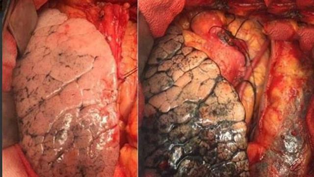
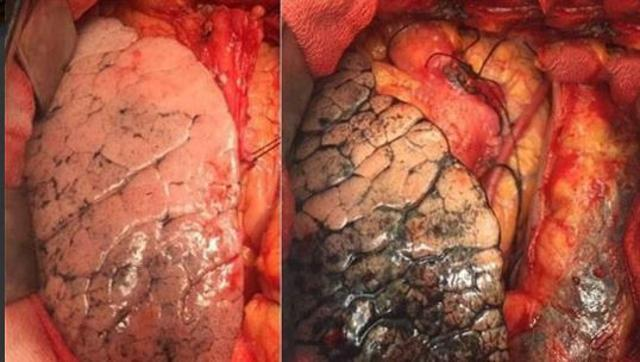

-
Oral Cancer
Mouth cancer, also known as oral cancer, is where a tumour develops on the surface of the tongue, mouth, lips or gums.
Tumours can also occur in the salivary glands, tonsils and the pharynx (the part of the throat from your mouth to your windpipe) but these are less common. Symptoms of mouth cancer include: red or white patches on the lining of your mouth or tongue, ulcers, a lump. A cancer that develops on the inside or outside layer of the body is called a carcinoma and these types of cancer are categorised by the type of cells the cancer starts in. Squamous cell carcinoma is the most common type of mouth cancer, accounting for nine out of 10 cases. Squamous cells are found in many places around the body, including the inside of the mouth and under the skin. Less common types of mouth cancer include: oral malignant melanoma – where the cancer starts in cells called melanocytes, which help give skin its colour adenocarcinomas – cancers that develop inside the salivary glands
-
Throat Cancer
Laryngeal cancer is a type of cancer that affects the larynx (voice box).
The larynx is part of the throat found at the entrance of the windpipe (trachea). It plays an important role in helping you breathe and speak. In the UK, there are about 2,400 new cases of laryngeal cancer each year. The condition is more common in people over the age of 60. It's about four times more common in men than women.
Symptoms of laryngeal cancer The main symptoms of laryngeal cancer include: a change in your voice, such as sounding hoarse, pain when swallowing or difficulty swallowing , a lump or swelling in your neck, a long-lasting cough, a persistent sore throat or earache, in severe cases, difficulty breathing, Some people may also experience bad breath, breathlessness, a high-pitched wheezing noise when breathing, unexplained weight loss, or fatigue (extreme tiredness). -
Lung Cancer
Lung cancer is one of the most common and serious types of cancer. Around 44,500 people are diagnosed with the condition every year in the UK.
There are usually no signs or symptoms in the early stages of lung cancer, but many people with the condition eventually develop symptoms including: a persistent cough, coughing up blood, persistent breathlessness, unexplained tiredness and weight loss, an ache or pain when breathing or coughing. Types of lung cancer: Cancer that begins in the lungs is called primary lung cancer. Cancer that spreads from the lungs to another place in the body is known as secondary lung cancer. This page is about primary lung cancer. There are two main types of primary lung cancer. These are classified by the type of cells in which the cancer starts. They are: non-small-cell lung cancer – the most common type, accounting for more than 80% of cases; can be either squamous cell carcinoma, adenocarcinoma or large-cell carcinoma small-cell lung cancer – a less common type that usually spreads faster than non-small-cell lung cancer The type of lung cancer you have determines which treatments are recommended.
-
Cigarrette chemicals
There is nothing good in a cigarette
What's In Cigarette Smoke? Cigarette smoke contains over 4,000 chemicals, including 43 known cancer-causing (carcinogenic) compounds and 400 other toxins. These include nicotine, tar, and carbon monoxide, as well as formaldehyde, ammonia, hydrogen cyanide, arsenic, and DDT. Nicotine is highly addictive. Smoke containing nicotine is inhaled into the lungs, and the nicotine reaches your brain in just six seconds. Nicotine in small doses acts as a stimulant to the brain. In large doses, it's a depressant, inhibiting the flow of signals between nerve cells. In even larger doses, it's a lethal poison, affecting the heart, blood vessels, and hormones. Nicotine in the bloodstream acts to make the smoker feel calm. As a cigarette is smoked, the amount of tar inhaled into the lungs increases, and the last puff contains more than twice as much tar as the first puff. Carbon monoxide makes it harder for red blood cells to carry oxygen throughout the body. Tar is a mixture of substances that together form a sticky mass in the lungs. Most of the chemicals inhaled in cigarette smoke stay in the lungs. The more you inhale, the better it feels—and the greater the damage to your lungs.
Gallery
 
